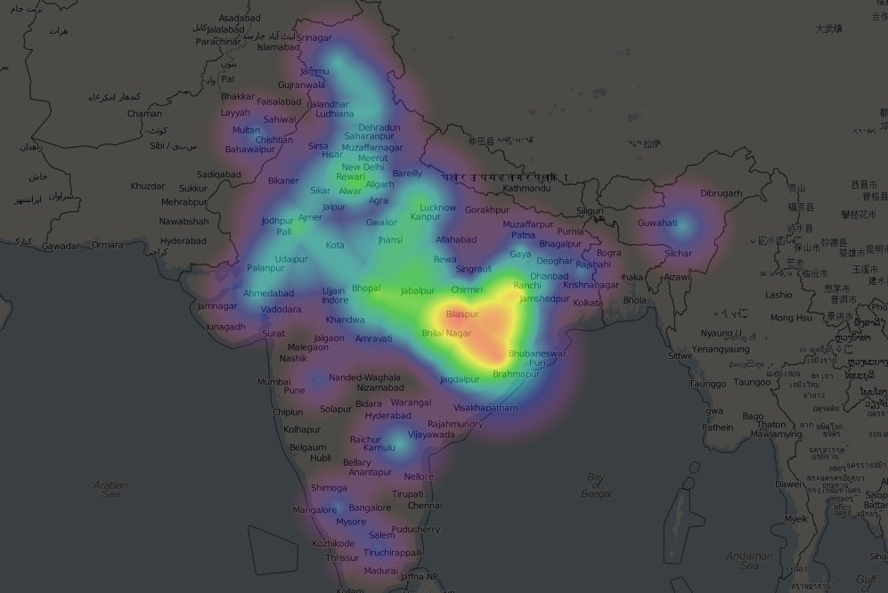

First bite of data.gov.in datasets
Posted on Tue 05 March 2013 in community, Contribute, contributions, FOSS, GIS, hackathon, Opendata, python
We turned up at the announced event through the facebook events page, had no clue who the organizers were and the place we were going to . The page just mentioned about telling stories with data. Staying with the open data community i had a clue of what was coming , but did not have a clear agenda or plan of action for next few hours we were going to stay at the meetup.One of the datasets i have been hearing about a lot past few months is from the data.gov.in website , since my rendevous with the Open Data from govt has been limited to the public data available through chalobest.in project , this project still has not been realized in NCR area. Anyway the place was a buzz with people of all age groups mostly students from journalism and activists too . we all sat in small groups either talking about an idea or data set we would be working on . Since i was interested in the data sets from Govt , we picked the infant mortality rate it was in CSV format , the big picture was to create a Heatmap out of the data available , the first thing we noticed was there were not lat longs for the states , so two members from team @arcolife and Myself sat down with the siteGeonames.orgto collect the same , in the meantime @bhanuvrat , @kanteshraj were writing scripts to the data transformed in the format required . Ramniq was our anchor man who was putting everything together , he started of with the Heatmap code , initially he was dablling with Openlayers later we switched to Leaflet which was much easier to code in . Overall at the end of it we produced the following heat map .
which was sort of hardcoded and static one with the limitations of time we could produce here is the code for the Heatmap .
The experience has been good for everyone since we we were getting together after longtime and produced something in the end. Scope for improvements we can cover more years with a time line kind of interface and really see it visually which is kind of nice than just some dry numbers on a spread sheet . We dispersed with lots of sweet memories and hope to have more such events in future.
Tools and Software used